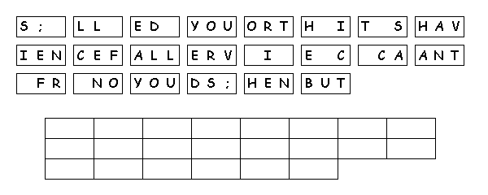

This
week's lessons:Acts
10:44-48, Psalm
98, 1
John 5:1-6,, John
15:9-17
Middle-School Pew-work
|
9 As the Father hath
loved me, so have I loved you: continue ye in my love. |
12 This is my
commandment, That ye love one another, as I have loved
you. |
things that I have heard of my Father I have made
known unto you. |
|
When you think about
your relationship with Jesus, do you feel like a friend or a
servant? Why do you feel that way, and what would make you feel
the other
way? |

Next Week: Acts 1:15-17, 21-26, Psalm 1, 1 John 5:9-13, John 17:6-19